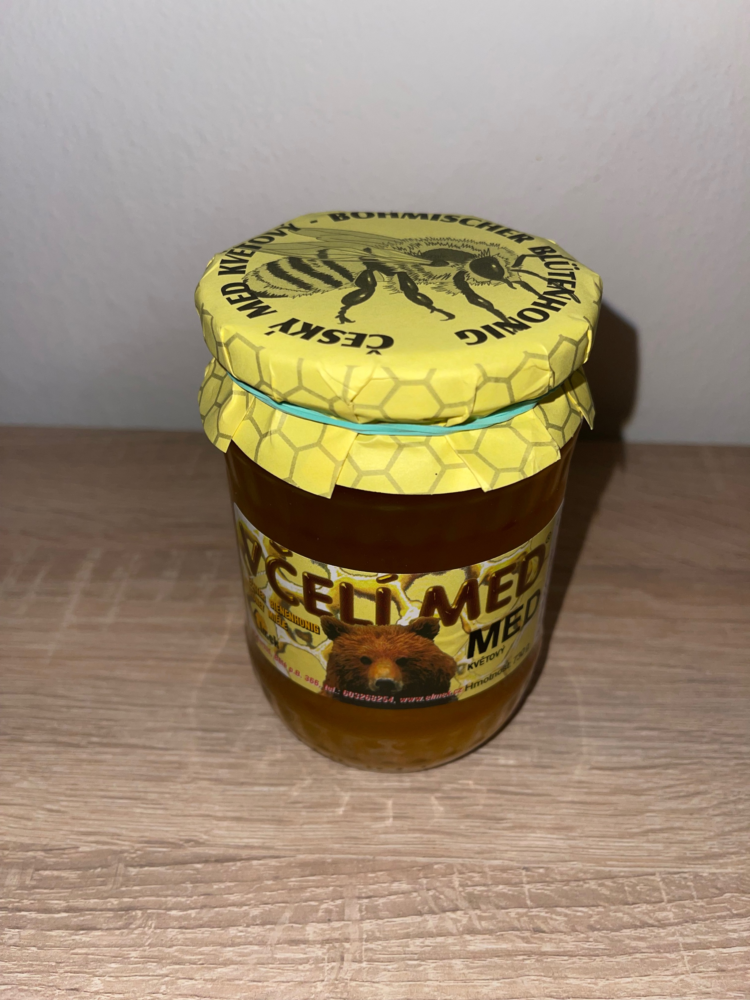
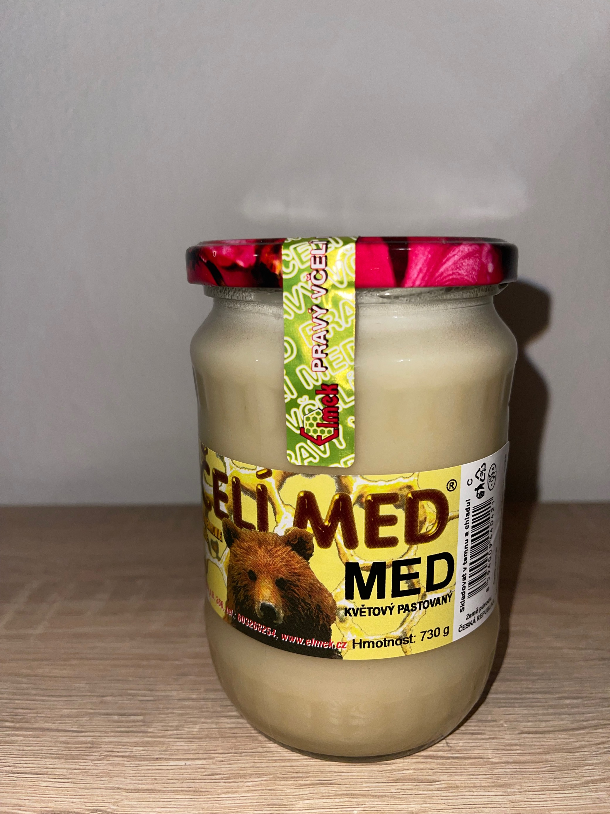

Elmek Petr Bartoš je firma rodinného charakteru. Její vznik se datuje od roku 1992.
Hlavním zaměřením firmy je zpracování,výkup a distribuce pravého českého medu do
velkoobchodních i
maloobchodních sítí po celé České republice. Zpracovávaný včelí med pochází z vlastní včelařské
farmy
nacházející se v oblasti rozmezí Lužických hor, Máchova kraje, brány Českého ráje a od včelařů z
blízkého okolí. Med je zpracován na základě dlouhodobých zkušeností, za přísných hygienických
podmínek. Každý med je přísně kontrolován podle norem, váhy a hygienického prostředí.
na moderních zařízeních. Všechny naše produkty splňují kritéria stanovené Českou veterinární
správou. Med se hodí k rychlému posílení těžce pracujícího člověka, sportovce apod. Velmi
rychle osvěží i jedna lžíce medu.
CHARASTERISTIKA NAŠICH MEDŮ
Včelí med Obsahuje mnoho cenných látek,zejména vitamíny, bílkoviny, enzymy,
minerální látky, éterické oleje a další látky.
Skládá se z jednoduchých cukrů, z glukózy a fruktózy,které jsou pro lidský organismus
nejpřijatelnější.
Med květový je čistým koncentrátem nektaru z květu rostlin. Má vyšší obsah ovocného a hroznového
cukru. Jeho barva je převážně světlá,má příjemnou vůni i chuť. Jeho přirozenou vlastností je zvýšená
krystalizace,která nemá vliv na kvalitu medu.
Med smíšený je zpracován z vybraných lesních, nektarových a medovicových medů z nektarů květů lípy,
akátu,malin a jiných. Vyznačuje se lahodnou chutí a vůní. Je tmavší barvy. Velmi pomalu
krystalizuje.
Med lesní je zpracován z vybraných medovicových medů. Obsahuje některé látky propolisové povahy a
vyšší podíl cenných minerálií. Má výraznou chuť i vůni. Zůstává dlouho tekutý, krystalizuje velmi
pomalu. Je tmavé barvy.
Krystalizace medu nesnižuje jeho kvalitu. Zkrystalizovaný med se může opatrně rozehřívat do
teploty
45°C, aniž by ztratil svoji hodnotu.
Med uskladňujeme v suché tmavé místnosti, při teplotě do 15°C a relativní vzdušné vlhkosti 60%.
Včelí medy jsou vysoce hodnotné doplňky výživy dětí, rekonvalescentů, sportovců aj. Patří mezi čisté
přírodní produkty, odpovídají zdravé výživě, zvyšují přirozenou odolnost organismu.
Naše produkty
Lesní smíšený med
Horský smíšený med

Květový med

Květový pastovaný med
Lipový med
Lesní med 600g
Horský med 600g
Kvetovy med 600g
Lipový med 600g
Lesní smíšený med
Lesní med přímo od včelaře Vhodný pro zdravé stravování, RAW, bez přidaných
cukrů, pouze to, co posbírají včely "v práci".
Med má tmavší barvu, označován za krále všech medů. Lesní med má kořeněné aroma, neopakovatelnou
harmonickou a lahodnou chuť a vysoký obsah minerálních látek.
Obsahuje některé látky propolisové povahy a vyšší podíl cenných minerálií. Má výraznou chuť i
vůni. Zůstává dlouho tekutý, krystalizuje velmi pomalu. Je tmavé barvy.
Horský smíšený med
Horský med přímo od včelaře
Květový med
Květový med přímo od včelaře. Med s chutí a vůní rozkvetlé louky.
- Čistým koncentrátem nektaru z květu rostlin
- Vyšší obsah ovocného a hroznového cukru, jeho barva je převážně světlá.